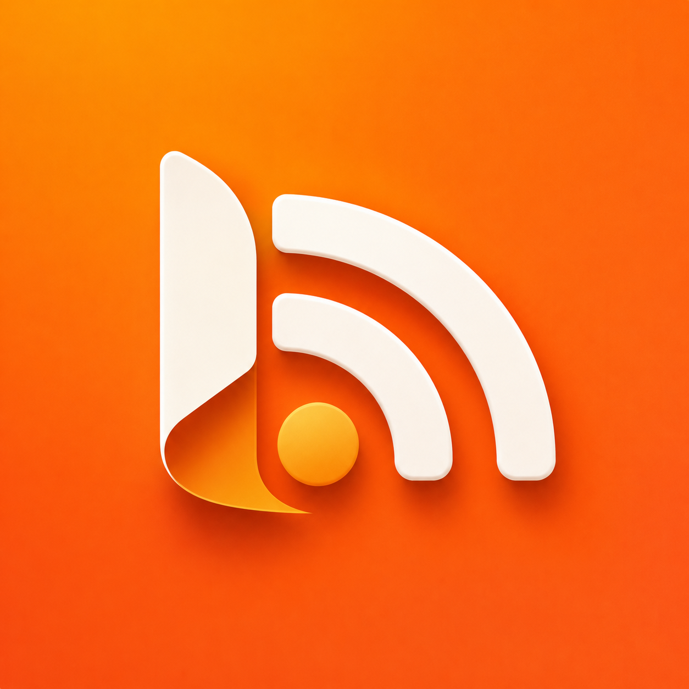

How can we help you today?
Tap the "+" icon on the Subscriptions screen. You can enter a URL directly or use the built-in QR scanner to quickly subscribe to a provider.
Yes! Your subscriptions and reading status automatically sync across all your devices using your iCloud account.
Reader Mode is enabled by default for a clean reading experience. You can toggle it in the article view settings if you prefer the original website layout.
Go to Settings > Storage & Cache. You can manually clear the cache or adjust the automatic cleanup policy (e.g., keep items for 1 month).
Add the RSS Reader changelog feed from Settings > Help & Legal to receive release notes inside the app.
We're here to help. Reach out to our support team and we'll get back to you as soon as possible.
Email Support